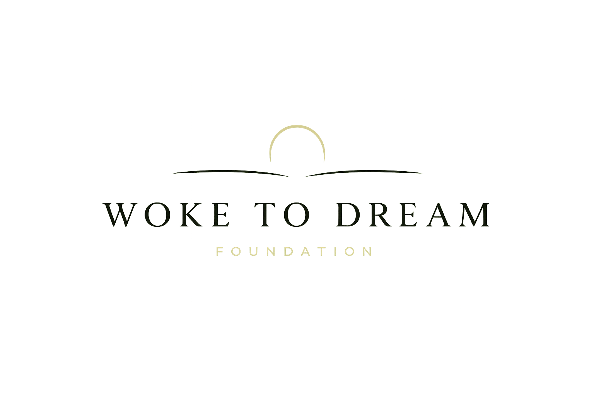

A community initiative honouring the dreams, dignity, and stories of Somali elders in Ottawa.
Woke to Dream is a community initiative dedicated to Somali elders in Ottawa — adults primarily in their sixties and seventies who survived the Somali Civil War, came to Canada as refugees, and spent decades building new lives in an unfamiliar country.
They raised families, built communities, and helped create the opportunities that many younger generations benefit from today. Now, with their children grown and their responsibilities changing, many find themselves with fewer opportunities for connection, cultural engagement, and community designed specifically for them.
Despite being part of one of Canada’s largest Somali communities, Somali elders remain largely absent from the programs and spaces that shape community life. Existing Somali organizations focus primarily on youth, employment, and family integration. Very few initiatives are designed specifically for elders, in their language and with their lived experiences in mind.
Somali elders come from a deeply communal culture, yet many now find themselves increasingly isolated. The relationships, routines, and sense of belonging that once formed the fabric of daily life have become more difficult to maintain with age, changing family dynamics, and the realities of life in Canada.
Woke to Dream is building that space — programs delivered in Somali, designed from within the community, and rooted in culture, belonging, and connection. Founded and led by a Somali-Canadian woman born and raised in Ottawa, the organization exists to ensure that this generation is not only supported, but celebrated.
Woke to Dream creates community for Somali elders in Ottawa — programs delivered in their language, grounded in their culture, and founded on the belief that it is never too late to dream.
A world where every Somali elder in Canada lives with belonging, dignity, and a community that was built for them.
people in the Somali community of the Ottawa region — one of the largest in Canada.
Many Somali elders have spent more than three decades building lives in Canada. Research shows that long-term immigrants are more likely to experience loneliness than Canadian-born older adults.
The majority arrived as refugees following the Somali Civil War in the early 1990s, rebuilding their lives from very little in a country that was entirely unfamiliar to them.
Today, those pioneers are in their sixties and seventies. They spent decades working, raising families, adapting to a new country, and helping build the Somali community that exists in Ottawa today. Their efforts laid the foundation for the generations that followed.
Now, with their children grown and many of their responsibilities behind them, some elders are finding themselves with something they have not had in decades: time. Yet many also find themselves increasingly isolated, with fewer opportunities for meaningful social connection than they once had.
For Somali elders specifically, the gap is significant. Community programming is overwhelmingly focused on youth, employment, settlement, and family services. Few opportunities exist that are designed specifically for elders — spaces where they can gather in their own language, build friendships, participate in meaningful activities, and reflect on what they want from the years ahead.
For many elders, the focus was never on themselves. It was on finding work, supporting family, and creating opportunities for the next generation. Their own hopes, interests, and goals were often put aside.
In 2017, our founder came across an email her father had sent to a local mosque, asking whether a weekly soccer program for Somali men that had lost its funding could continue. What struck her was not the program, but that her father had something he looked forward to — and it had simply ended. That moment became the foundation of Woke to Dream.
The next year, Zaynab secured a grant from Rising Youth and launched a sewing circle for Somali elder women, with EcoEquitable. For six months, about ten women gathered weekly to learn, create, and spend time together. The friendships continued long after the funding ended.
Now in its second chapter, Woke to Dream is relaunching with expanded programming, a clearer structure, and a longer-term vision. The foundation holds: when something is genuinely built for this community, in their language and on their terms, they show up.
Five commitments that shape every gathering, every decision, and every dream we help carry.
Before we teach, celebrate, or create, we make sure every person in the room feels genuinely welcomed. Community is not the backdrop for our work — it is the work itself.
Age, education, language, and history do not determine what a person is capable of experiencing or becoming. Every program is a practical demonstration of this belief.
Somali language, storytelling, art, and tradition are not decorative elements in our programming. They are the ground we build on.
Our elders have spent decades surviving. They deserve more than services — they deserve experiences that honour who they are.
Woke to Dream was built from inside this community and will grow the same way — every program designed by someone who is part of it, understands it, and is accountable to it.
Four programs, each designed from within the community and delivered in Somali — woven toward a steady, year-round rhythm. The first two pilots launch in July 2026.
Somalis have always been a people of poetry. Long before there was a written Somali language, gabay — the oral poetry tradition — was how communities recorded history, resolved conflict, and made sense of the world. Gabay iyo Sheeko is a two-evening gathering where elders write, recite, and share — composing gabay, telling personal stories, or simply speaking about their lives. An elder from the community facilitates; the evenings unfold in Somali, over shaah and snacks. There is no performance pressure — this is a space for elders to be heard, in their own language and their own tradition.
Once a month, Somali elders and their adult children come together for an evening of team-based games, food, and conversation — a chance for intergenerational bonding in a setting that is relaxed, fun, and centred on community. As it grows, the goal is a consistent monthly fixture that elders look forward to.
A structured three-month program running four sequential streams. It begins with cooking and baking in a communal kitchen, with time to talk while working. It moves into a wellness stream led by a personal trainer — movement, goal-setting, and health, adapted for older adults. The third and longest stream is cultural programming: weaving, gabay, sewing, and potentially Somali dance, each led by a community specialist. The cohort closes with a showcase for participants, families, and community.
A curated list of Somali-speaking professionals — health, employment, legal, social services, financial literacy — who offer their services to the community. Not a referral program: it exists so that when someone needs help after the program ends, they know where to go and who speaks their language.
Through open community referral, Woke to Dream identifies a Somali elder who has quietly carried a personal dream — and makes it real. Everything is arranged before the elder is told, and shared with their full consent. There is no cap on cost. No comparable program exists in Canada for Somali elders.
Our goals are human before they are numerical. Through culturally grounded programs, Woke to Dream aims to:
By creating consistent, culturally grounded spaces for connection among Somali elders in Ottawa.
For elders who have spent decades in survival mode, with little space made for their own wellbeing.
Deepening intergenerational relationships within Somali families across the city.
Oral poetry, weaving, communal cooking, and shared storytelling, carried forward by those who hold them.
Linking elders to professional support in their own language and on their own terms.
Telling the stories of individual elders whose lives are changed by this work.
Woke to Dream serves Somali adults primarily in their sixties and seventies living in Ottawa.
Many arrived in Canada as refugees following the civil war, without English fluency, credentials recognized here, or access to adequate support. They spent their years prioritizing family survival over their own wellbeing. With their children now grown, many find themselves with time but little community around them.
Somali elders are, by tradition, deeply communal people — accustomed to a life lived collectively, to shared meals, to storytelling, to being surrounded by people who know them. That way of life was disrupted by war and displacement. Woke to Dream is building the conditions for it to exist again.
Zaynab Omer is a Somali-Canadian woman born and raised in Ottawa, with deep roots in the local Somali community. She founded Woke to Dream in 2017 after recognizing that the generation before her — the elders who built this community — had been consistently passed over by both mainstream institutions and diaspora organizations.
She leads all strategy, programming, partnerships, and fundraising for the organization.
Built from inside this community — and growing the same way.
Woke to Dream keeps its structure light so that warmth, not bureaucracy, leads. As the organization enters its second chapter, it is supported by community partners and volunteers who share its commitment to elders.
We do this work alongside trusted organizations who share our care for elders, culture, and community.
Community outreach, participant recruitment, and facilitation support for pilot programs.
Facilitation support and access to Ottawa's senior service network.
Cultural programming support and community connection.
We are always glad to find new partners — community groups, health and settlement services, funders, and neighbours who want to help build this. There is room for you here.
Woke to Dream is actively seeking support to run its pilot programs and build toward a sustained, funded organization. We run lean — funding goes directly to the things elders feel.
runs both pilot programs in full — covering food, venue where needed, and modest facilitator honorariums.
delivers the first structured cohort — facilitators, venue, materials, food, and documentation.
A small amount of support travels a remarkably long way when it is spent on belonging.
Whether you are a funder, a partner, a councillor, or a neighbour — we would love to build this alongside you.